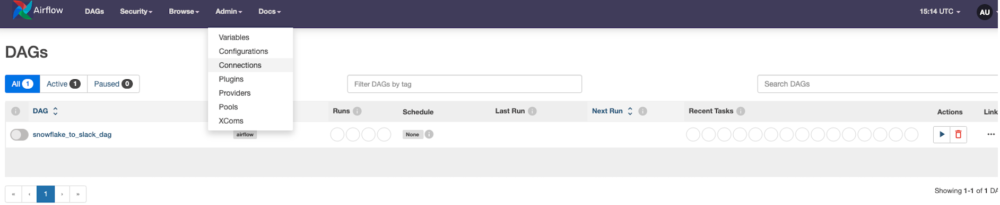

Teradata Vantage で Apache Airflow を使用する
前提条件
-
Ubuntu22.x
-
Teradata Vantageインスタンスへのアクセス。
Vantage のテスト インスタンスが必要な場合は、 https://clearscape.teradata.com. で無料でプロビジョニングできます。 -
Python 3.8、3.9、3.10、または *3.11*がインストールされていること。
Apache Airflowをインストールする
-
AIRFLOW_HOME環境変数を設定します。Airflowにはホームディレクトリが必要で、デフォルトで~/airflowを使用するが、必要に応じて別の場所を設定することもできます。AIRFLOW_HOME環境変数は、Airflowに目的の場所を通知するために使用されます。
export AIRFLOW_HOME=~/airflow -
PyPIリポジトリから`apache-airflow`の安定版バージョン2. 8.1をインストールします。
AIRFLOW_VERSION=2.8.1 PYTHON_VERSION="$(python --version | cut -d " " -f 2 | cut -d "." -f 1-2)" CONSTRAINT_URL="https://raw.githubusercontent.com/apache/airflow/constraints-${AIRFLOW_VERSION}/constraints-${PYTHON_VERSION}.txt" pip install "apache-airflow==${AIRFLOW_VERSION}" --constraint "${CONSTRAINT_URL}" -
Airflow Teradataプロバイダの安定バージョン1.0.0をPyPIリポジトリからインストールします。
pip install "apache-airflow-providers-teradata==1.0.0"
Airflow をスタンドアロンで開始する
-
Airflow をスタンドアロンで実行します。
airflow standalone -
Airflow UIにアクセスします。ブラウザでhttps://localhost:8080にアクセスし、ターミナルに表示されている管理者アカウントの詳細でログインします。
Airflow UIでTeradata接続を定義する
-
UIの[Admin]→[Connections]セクションを開きます。[Create]リンクをクリックして、新しい接続を作成します。
 -
新しい接続ページに入力の詳細を入力します。

-
接続ID: Teradata接続の一意のID。
-
接続タイプ: システムのタイプ。Teradataを選択します。
-
データベースサーバーのURL(必須): 接続するTeradataインスタンスのホスト名。
-
データベース(オプション): 接続するデータベースの名前を指定します。
-
ログイン(必須): 接続するユーザー名を指定します。
-
パスワード(必須): 接続するためのパスワードを指定します。
-
「Test and Save」をクリックします。
-
AirflowでDAGを定義する
-
irflow では、DAG は Python コードとして定義されます。
-
DAG_FOLDER - $AIRFLOW_HOME/files/dags ディレクトリの下に、sample.py のような Python ファイルとして DAG を作成します。
from datetime import datetime from airflow import DAG from airflow.providers.teradata.operators.teradata import TeradataOperator CONN_ID = "Teradata_TestConn" with DAG( dag_id="example_teradata_operator", max_active_runs=1, max_active_tasks=3, catchup=False, start_date=datetime(2023, 1, 1), ) as dag: create = TeradataOperator( task_id="table_create", conn_id=CONN_ID, sql=""" CREATE TABLE my_users, FALLBACK ( user_id decimal(10,0) NOT NULL GENERATED ALWAYS AS IDENTITY ( START WITH 1 INCREMENT BY 1 MINVALUE 1 MAXVALUE 2147483647 NO CYCLE), user_name VARCHAR(30) ) PRIMARY INDEX (user_id); """, )
DAGを実行する
DAG は次の 2 つの方法のいずれかで実行されます。 1. 手動または API 経由でトリガーされた場合 2. DAG の一部として定義されている定義されたスケジュールで、 `example_teradata_operator`が手動でトリガーされるように定義されています。スケジュールを定義するには、Crontab スケジュール値をスケジュール引数に渡すことができます。
with DAG(
dag_id="my_daily_dag",
schedule="0 0 * * *"
) as dag:まとめ
このチュートリアルでは、Airflow と Airflow Teradata プロバイダーを Teradata Vantage インスタンスで使用する方法を説明しました。提供されているサンプルDAGは、Connection UIで定義されたTeradata Vantageインスタンスに`my_users`テーブルを作成します。
さらに詳しく
| ご質問がある場合、またはさらにサポートが必要な場合は、コミュニティ フォーラムにアクセスしてサポートを受け、他のコミュニティ メンバーと交流してください。 |